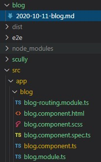
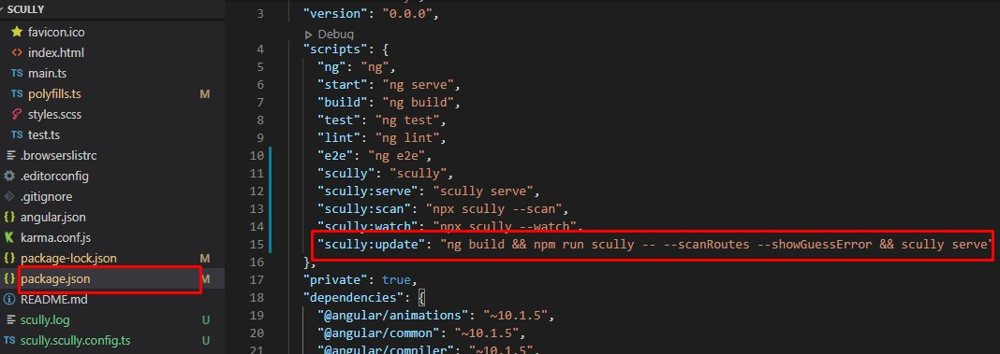
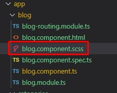

初探 Scully 建立 blog
原本就是寫 Angular 框架的我，最近得知 Scully 屬 Angular 的靜態頁面產生器，激起了我的好奇心
所以開始了以下路程
官方文件：https://scully.io/
準備
使用環境
1 | _ _ ____ _ ___ |
先建立一個新的 ng 專案
1 | ng new scully(專案名稱) |
新增 Scully
1 | ng add @scullyio/init |
註：安裝完後 需重新啟動 ng serve
此時會新增一支 scully.<專案名稱>.config.ts 檔案
主要是用來配置 靜態檔案的 router 的路徑
一開始的文件會是像這樣 此時 router 尚未設定
1 | import { ScullyConfig } from '@scullyio/scully'; |
在啟動 Scully 前，需先執行 (可以在 vscode 裡開一個新的 cmd)
1 | ng build --prod |
執行完後 再啟動 scully
1 | npm run scully |
所有的靜態頁面都會放在 ./dist/static 資料夾裡
開始建立 blog
官方參考文件：https://scully.io/docs/learn/create-a-blog/add-blog-support/
1 | ng generate @scullyio/init:blog |
產生出以下檔案

建立入口點 (首頁)
1 | ng generate module home --route=home --module=app-routing |
在這裡 可以先在 package.json 裡的 script 加上
1 | "scully:update": "ng build && npm run scully -- --scanRoutes --showGuessError && scully serve" |

註：可參考 scully 各種執行命令
在 cmd 裡執行
1 | npm run scully:update |
簡易的 blog 即完成囉!!
接下來就是開始撰寫各種 blog 的樣版啦!!
為程式程碼上色
Scully 內建了 PrismJS
官方參考文件：https://scully.io/docs/Reference/utilities/prism-js/
可以到 https://github.com/PrismJS/prism-themes 這裡找喜歡的顏色主題來使用
將喜歡的主題顏色 css 貼到 blog.css 裡

卡關點
來分享下我在學習 sully 時 花比較多時間理解的地方
因為思考著是否將原本的 hexo 改用 scully
而原本的 hexo 網址前面沒有 blog 所以希望能在網址不要更動之下轉移
在網址對應這部份
例：
scully.scully.config.ts
1 | export const config: ScullyConfig = { |
app-routing.module.ts
1 | const routes: Routes = [ |
scully.scully.config.ts 裡的 routes 路徑 必須與 app-routing.module.ts 裡的 path 對應
所產生的路徑才會正確，變數名稱也是一樣